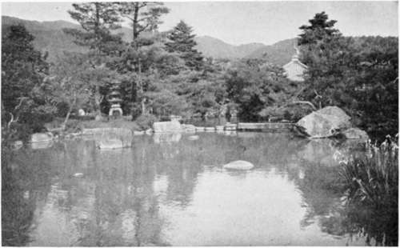

The New York Park. Continued
Description
This section is from the book "Landscape Gardening", by Andrew Jackson Downing. Also available from Amazon: Landscape Gardening.
The New York Park. Continued
Looking at the present government of the city as about to provide, in the People's Park, a breathing zone and healthful place for exercise for a city of half a million of souls, we trust they will not be content with the limited number of acres already proposed. Five hundred acres is the smallest area that should be reserved for the future wants of such a city, now, while it may be obtained. Five hundred acres may be selected between Thirty-ninth-street and the Harlem River, including a varied surface of land, a good deal of which is yet waste area, so that the whole may be purchased at something like a million of dollars. In that area there would be space enough to have broad reaches of park and pleasure grounds, with a real feeling of the breadth and beauty of green fields, the perfume and freshness of nature. In its midst would be located the great distributing reservoirs of the Croton aqueduct, formed into lovely lakes of limpid water, covering many acres, and heightening the charm of the sylvan accessories by the finest natural contrast. In such a park the citizens who would take excursions in carriages or on horseback could have the substantial delights of country roads and country scenery and forget for a time the rattle of the pavements and the glare of brick walls. Pedestrians would find quiet and secluded walks when they wished to be solitary, and broad alleys filled with thousands of happy faces when they would be gay. The thoughtful denizen of the town would go out there in the morning, to hold converse with the whispering trees, and the weary tradesmen in the evening, to enjoy an hour of happiness by mingling in the open space with all the world.
The many beauties and utilities that would gradually grow out of a great park like this in a great city like New York suggest themselves immediately and forcibly. Where would be found so fitting a position for noble works of art, the statues, monuments, and buildings commemorative at once of the great men of the nation, of the history of the age and country, and the genius of our highest artists? In the broad area of such a verdant zone would gradually grow up, as the wealth of the city increases, winter gardens of glass, like the great Crystal Palace, where the whole people could luxuriate in groves of the palms and spice trees of the tropics, at the same moment that sleighing parties glided swiftly and noiselessly over the snow-covered surface of the country-like avenues of the wintry park without. Zoological Gardens, like those of London and Paris, would gradually be formed by private subscription or public funds, where thousands of old and young would find daily pleasure in studying natural history, illustrated by all the wildest and strangest animals of the globe, almost as much at home in their paddocks and jungles as if in their native forests; and Horticultural and Industrial Societies would hold their annual shows there, and great expositions of the arts would take place in spacious buildings within the park, far more fittingly than in the noise and din of the crowded streets of the city.
Fig. 48. A Japanese Park.
We have had said nothing of the social influence of such a great park in New York. But this is really the most interesting phase of the whole matter. It is a fact not a little remarkable that, ultra democratic as are the political tendencies of America, its most intelligent social tendencies are almost wholly in a contrary direction. And among the topics discussed by the advocates and opponents of the new park, none seem so poorly understood as the social aspect of the thing. It is, indeed, both curious and amusing to see the stand taken on the one hand by the million, that the park is made for the "upper ten," who ride in fine carriages, and, on the other hand, by the wealthy and refined, that a park in this country will be "usurped by rowdies and low people." Shame upon our republican compatriots who so little understand the elevating influences of the beautiful in nature and in art when enjoyed in common by thousands and hundreds of thousands of all classes without distinction! They can never have seen how all over France and Germany the whole population of the cities pass their afternoons and evenings together in the beautiful public parks and gardens. How they enjoy together the same music, breathe the same atmosphere of art, enjoy the same scenery, and grow into social freedom by the very influences of easy intercourse, space and beauty that surround them. In Germany, especially, they have never seen how the highest and the lowest partake alike of the common enjoyment -the prince seated beneath the trees on a rush-bottomed chair, before a little wooden table, supping his coffee or his ice, with the same freedom from state and pretension as the simplest subject. Drawing-room conventionalities are too narrow for a mile or two of spacious garden landscape, and one can be happy with ten thousand in the social freedom of a community of genial influences, without the unutterable pang of not having been introduced to the company present.
These social doubters who thus intrench themselves in the sole citadel of exclusiveness in republican America, mistake our people and their-destiny. If we would but have listened to them our magnificent river and lake steamers, those real palaces of the million, would have had no velvet couches, no splendid mirrors, no luxurious carpets. Such costly and rare appliances of civilization, they would have told us, could only be rightly used by the privileged families of wealth, and would be trampled upon and utterly ruined by the democracy of the country who travel one hundred miles for half a dollar. And yet these, our floating palaces and our monster hotels, with their purple and fine linen, are they not respected by the majority who use them, as truly as other palaces by their rightful sovereigns? Alas, for the faithlessness of the few, who possess, regarding the capacity for culture of the many, who are wanting. Even upon the lower platform of liberty and education that the masses stand in Europe, we see the elevating influences of a wide popular enjoyment of galleries of art, public libraries, parks and gardens, which have raised the people in social civilization and social culture to a far higher level than we have yet attained in republican America. And yet this broad ground of popular refinement must be taken in republican America, for it belongs of right more truly here than elsewhere. It is republican in its very idea and tendency. It takes up popular education where the common school and ballot-box leave it, and raises up the working man to the same level of enjoyment with the man of leisure and accomplishment. The higher social and artistic elements of every man's nature lie dormant within him, and every laborer is a possible gentleman, not by the possession of money or fine clothes, but through the refining influence of intellectual and moral culture. Open wide, therefore, the doors of your libraries and picture galleries, all ye true republicans! Build halls where knowledge shall be freely diffused among men, and not shut up within the narrow walls of narrower institutions. Plant spacious parks in your cities and unloose their gates as wide as the gates of morning to the whole people. As there are no dark places at noonday, so education and culture — the true sunshine of the soul — will banish the plague spots of democracy; and the dread of the ignorant exclusive who has no faith in the refinement of a republic, will stand abashed in the next century before a whole people whose system of voluntary education embraces (combined with perfect individual freedom), not only common schools of rudimentary knowledge, but common enjoyments for all classes in the higher realms of art, letters, science, and social recreations. Were our legislators but wise enough to understand to-day the destinies of the New World, the gentility of Sir Philip Sidney, made universal, would be not half so much a miracle fifty years hence in America as the idea of a whole nation of laboring men reading and writing was, in his day, in England.
Continue to: